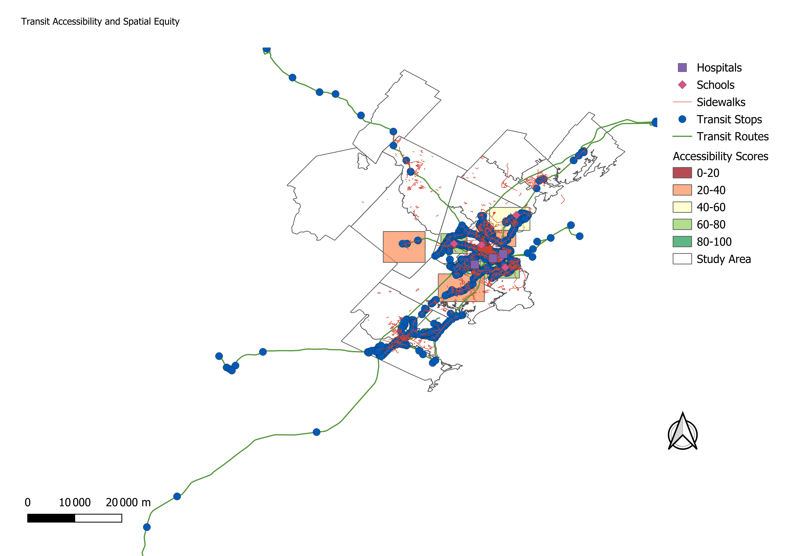

Greater Portland, Maine | PostgreSQL/PostGIS, Python ETL, Spatial SQL, QGIS Automation
Generated 2026-06-03 07:56:25 from the local PostGIS database on port 5764.
This project evaluates transit accessibility and spatial equity across a first-run Greater Portland analysis area. The pipeline downloads public GPCOG transit, route, sidewalk, and study-area layers, loads them into PostGIS, runs spatial SQL, and exports a QGIS map and report-ready findings.
The 800-meter transit stop buffer covers about 50,939 residents (69.12%) across the current neighborhood sample, leaving 22,761 residents outside that access band.
Important interpretation note: neighborhoods, schools, and hospitals are currently synthetic sample records. They keep the end-to-end workflow operational while verified public Census and facility datasets are added. Treat the workflow, SQL, and cartographic automation as production structure, and treat current neighborhood-level scores as demonstration values until those layers are replaced.
| Neighborhood | Population | Score | Transit | Sidewalk | School | Hospital | Nearest Stop m |
|---|---|---|---|---|---|---|---|
| Portland Peninsula | 18,000 | 91.25 | 100 | 100 | 69.23 | 74.02 | 122.21 |
| South Portland Waterfront | 13,500 | 72.27 | 100 | 71.29 | 43.58 | 21.66 | 77.41 |
| Westbrook Core | 11,800 | 64.44 | 100 | 16.35 | 97.69 | 0 | 39.46 |
| Neighborhood | Population | Score | Transit | Sidewalk | School | Hospital | Nearest Stop m |
|---|---|---|---|---|---|---|---|
| Gorham Center | 7,800 | 29.58 | 70 | 5.25 | 0 | 0 | 731.30 |
| East Deering | 7,200 | 31.51 | 70 | 11.70 | 0 | 0 | 416.32 |
| Scarborough North | 9,000 | 36.46 | 70 | 28.20 | 0 | 0 | 716.90 |
The map was generated from PostGIS layers using the QGIS Python API. It includes transit routes, stops, sidewalks, schools, hospitals, study-area boundaries, graduated accessibility-score polygons, legend, scale bar, and north arrow.

| Buffer | Population Inside | Population Outside | Percent Covered |
|---|---|---|---|
| 400 m | 33,577 | 40,123 | 45.56% |
| 800 m | 50,939 | 22,761 | 69.12% |
| Neighborhood | Population | Accessibility | Transit | Sidewalk | School | Hospital | Nearest Stop m |
|---|---|---|---|---|---|---|---|
| Portland Peninsula | 18,000 | 91.25 | 100 | 100 | 69.23 | 74.02 | 122.21 |
| South Portland Waterfront | 13,500 | 72.27 | 100 | 71.29 | 43.58 | 21.66 | 77.41 |
| Westbrook Core | 11,800 | 64.44 | 100 | 16.35 | 97.69 | 0 | 39.46 |
| Falmouth Foreside | 6,400 | 52.13 | 100 | 27.58 | 19.27 | 0 | 169.19 |
| Scarborough North | 9,000 | 36.46 | 70 | 28.20 | 0 | 0 | 716.90 |
| East Deering | 7,200 | 31.51 | 70 | 11.70 | 0 | 0 | 416.32 |
| Gorham Center | 7,800 | 29.58 | 70 | 5.25 | 0 | 0 | 731.30 |
| Rank | Neighborhood | Score | Nearest Stop m | Score Below 40 | Farther Than 800 m |
|---|---|---|---|---|---|
| 1 | Gorham Center | 29.58 | 731.30 | 1 | 0 |
| 2 | East Deering | 31.51 | 416.32 | 1 | 0 |
| 3 | Scarborough North | 36.46 | 716.90 | 1 | 0 |
The database uses geometry columns in EPSG:4326 and transforms geometries to EPSG:26919 for meter-based analysis. Transit stop buffers are created with ST_Buffer and dissolved with ST_Union. Population coverage is estimated by intersecting neighborhood polygons with 400-meter and 800-meter buffers. Nearest stop and facility distances are calculated from neighborhood centroids with projected ST_Distance measures and KNN-style ordering.
The accessibility score is a weighted index from 0 to 100: 40 percent transit access, 30 percent sidewalk access, 20 percent school access, and 10 percent hospital access. Underserved neighborhoods are flagged when the score is below 40, the nearest stop is more than 800 meters away, or the polygon is outside the 800-meter transit buffer.
| Layer | Records |
|---|---|
| Hospitals | 3 |
| Neighborhoods | 7 |
| Schools | 5 |
| Sidewalk segments | 10,670 |
| Study-area polygons | 17 |
| Transit routes | 416 |
| Transit stops | 982 |
PostGIS version: POSTGIS="3.6.2 3.6.2" [EXTENSION] PGSQL="170" GEOS="3.14.1dev-CAPI-1.20.4" PROJ="8.2.1 NETWORK_ENABLED=OFF URL_ENDPOINT= USER_WRITABLE_DIRECTORY=C:\WINDOWS\ServiceProfiles\NetworkService\AppData\Local/proj" (compiled against PROJ 8.2.1) LIBXML="2.12.5" LIBJSON="0.12" LIBPROTOBUF="1.2.1" WAGYU="0.5.0 (Internal)" TOPOLOGY
Key SQL artifacts: coverage_buffers, coverage_summary,
nearest_transit_stop, neighborhood_sidewalk_access,
accessibility_scores, underserved_areas, and
neighborhood_accessibility_map.